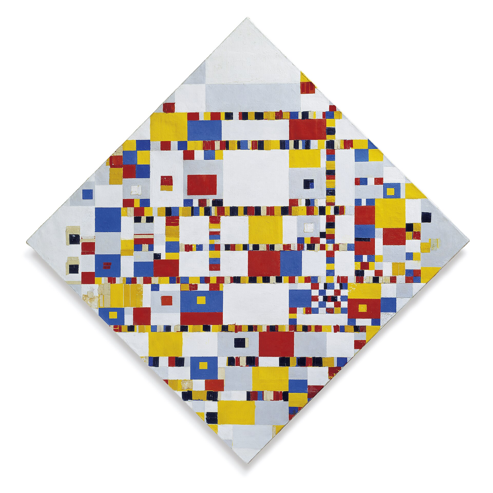

Dutch painter who is regarded as one of the greatest artists of the 20th century. He was one of the pioneers of 20th-century abstract art, as he changed his artistic direction from figurative painting to an abstract geometric style.
In the painting Victory Boogie Woogie (1942–1944), Mondrian replaced former solid lines with lines created from small adjoining rectangles of color.
